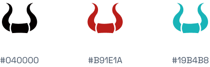

BlackBulls is a Discord server for a team of gamers that play Zombie Shop. I was tasked to created the brand identity of the group.

1-D: Define
Outlining the task
My task was to create a gaming logo for the Discord channel.
1-D: Define
Keywords to set the tone
To guide me forward I wrote down a few keywords inspired by the “black bulls” and “gaming”.
toreador • arena • cape
pain • violence • fighting • cheering
2-D: Design
The style of gaming logos
The gaming industry prefers an emblem or badge logo, which is a design that wraps texts and graphic elements in a stylized, layered and organized manner, such as in a shield or custom shape, to represent the gaming groups or eSports teams.
2-D: Design
Choosing the colours
The classic black and red pairing, with green as a secondary colour leads creates an unique identity.
2-D: Design
Designing the logo
The logo consists of a bull on top of a shield. The aim is to allude to toreadors, and to project strength, while still looking like a gaming logo.
3-D: Deliver
Exporting the assets
I exported the logo as a 512x512 .png and 2048x2048 .svg, and sent it over to the founder of BlackBulls via WeTransfer.